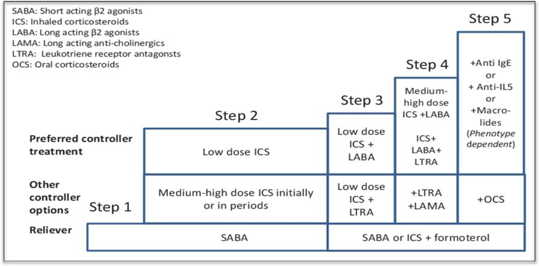
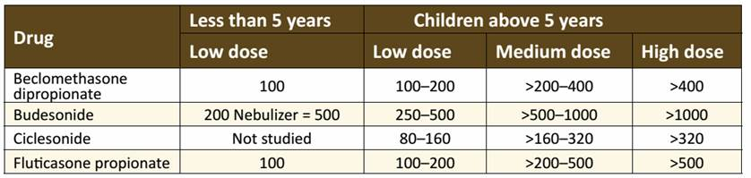

DEFINITION
Chronic inflammatory condition of the lung airways resulting in episodic airflow obstruction
DIAGNOSIS
Any of the following symptoms must be considered for diagnosis of asthma in children:
ASTHMA EXACERBATION MANAGEMENT
Assessment of asthma severity should be performed to all patients presented to the ER with asthma exacerbation
| Mild | Moderate | Severe | Life-threatening | |
|---|---|---|---|---|
| Mental state | Normal | Normal | Agitated | Confused/Drowsy |
| Accessory muscles | Not used | Some use | Moderate-marked use | Maximal use Exhaustion ± central cyanosis |
| Initial SpO2 | 95% | 90-95% | <90% | < 85% |
| Pulse | Normal | Tachycardia | Tachycardia | Marked tachycardia |
| Talk | sentences | phrases | single words | Unable to talk |
| Lung Sounds | Wheeze + normal breath sounds | Wheeze ± reduced breath sounds | Wheeze ± reduced breath sounds | Quiet chest |
| Adapted with modifications from Global initiative of asthma 2022 update | ||||
|
Notes
If a patient has signs and symptoms that cross categories always treat according to their most severe features. If the child has received treatment prior to arrival, manage as more severe than the clinical signs indicate. |
||||
Breathing rates in awake children
| Age | Normal rate |
|---|---|
| <2 months | <60/minute |
| 2–12 months | <50/minute |
| 1–5 years | <40/minute |
| 6–12 years | <30/minute | Adapted from Global initiative of asthma 2022 update |
Heart rates in children
| Age | Normal rate |
|---|---|
| 2–12 months | <160/minute |
| 1–2 years | <120/minute |
| 2–12 years | <110/minute | Adapted from Global initiative of asthma 2022 update |
Asthma exacerbation management Action plan
| Level of severity | Action |
| Mild | Manage at ER and discharge, unless the case shifted to more severe level. |
| Moderate | Manage at ER and reassess the need for admission by Pediatrician. |
| Severe | Admit to Pediatric ward |
| Life- threatening | Admit to ICU |
The patient should have most of the lower severity level features to be shifted from one severity to the milder one. |
|
MILD SEVERITY MANAGEMENT
MODERATE SEVERITY MANAGEMENT
SEVERE SEVERITY MANAGEMENT
DISCHARGE CRITERIA
DISCHARGE PLAN
Dosages of drugs for asthma exacerbations:
| Medication | Dose | Comment |
|---|---|---|
| Salbutamol Nebulizer solution |
0.15 mg/kg (minimum dose 2.5 mg) every 20 minutes for 3 doses then 0.15–0.3 mg/kg up to 10 mg every 1–4 hours as needed, or 0.5 mg/kg/hour by continuous nebulization | Only selective beta 2–agonists are recommended. For optimal delivery, dilute aerosols to minimum of 3 ml at gas flow of 6–8 L/min. Use large volume nebulizers for continuous administration. May mix with Ipratropium nebulizer solution. |
| Salbutamol MDI (90 mcg/puff) |
4–10 puffs every 20 minutes for 3 doses, then every 1–4 hours inhalation maneuver as needed. Use VHC; add mask in children <4 years. | In mild–to–moderate exacerbations MDI plus VHC is as effective as nebulized therapy with appropriate administration technique and coaching by trained personnel. |
| Ipratropium bromide Nebulizer solution (0.25 mg/ml) |
0.25–5 mg every 20 minutes for 3 doses, then as needed | May be used for up to 3 hours in the initial management of severe exacerbations. The Addition of Ipratropium to Albuterol has not been shown to provide further benefit the patient is hospitalized. |
| Systemic Corticosteroids: Prednisone, Methylprednisolone, Prednisolone |
1-2 mg/kg in 2 divided doses (maximum = 60 mg/day) | For outpatient burst, use 12 mg/kg/day maximum 60 mg/day for 3–10 days. |
| Hydration | 100 ml/kg/24 hr D5 NS | Calculate dehydration if present, Pay attention to patient medical diseases |
| Second line therapies | ||
| Magnesium Sulfate (IV) | 0.1–0.2 mmol/kg (Maximum 10 mmol) or 25-75 mg/kg Max (2.5 gm) slow infusion 20-60 min | Avoid magnesium sulfate in children younger than 2 years Dilute in isotonic solution (normal saline) Monitor blood pressure |
Notes:
|
||
| Adapted from Global initiative of asthma 2022 update | ||
OPD ASTHMA FOLLOW-UP
Levels of Asthma control in children
| Characteristics | Controlled (All of the following) |
Partly controlled (Any measure presents in any week) |
Uncontrolled (≥3 of any features of the partly controlled asthma in any week) |
|---|---|---|---|
| Daytime symptoms | None (<2/week) | >2 days/week | >2 days/week |
| Limitations of activities | None | Any | Any |
| Need for bronchodilator | ≤2 days/week | >2 days/ week | >2 days/ week |
OUTPATIENT MANAGEMENT OF ASTHMA FOR CHILDREN
NOTES
FOLLOW-UP OF PATIENT ON INHALED STEROIDS
| Age group | Preferred Device | Alternative Device |
|---|---|---|
| < 4 years | pMDI plus a spacer with face mask | nebulizer with face mask |
| 4-6 years | pMDI plus a spacer with mouthpiece | pMDI plus a spacer with a face mask or, a nebulizer with mouthpiece or face mask |
| Older than 6 years | Dry powder inhaler, or breath actuated pMDI, or pMDI with spacer and mouth piece | Nebulizer with mouthpiece |
LIST OF EQUIPOTENT DAILY DOSES IN MICROGRAMS (MG) OF THE ICS
